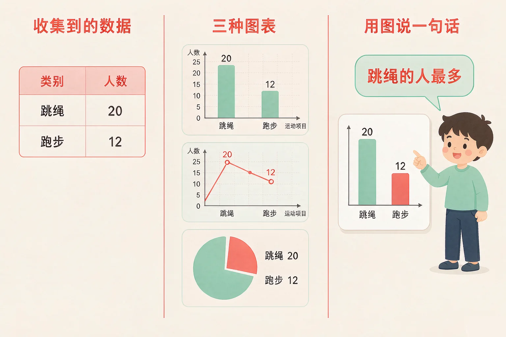
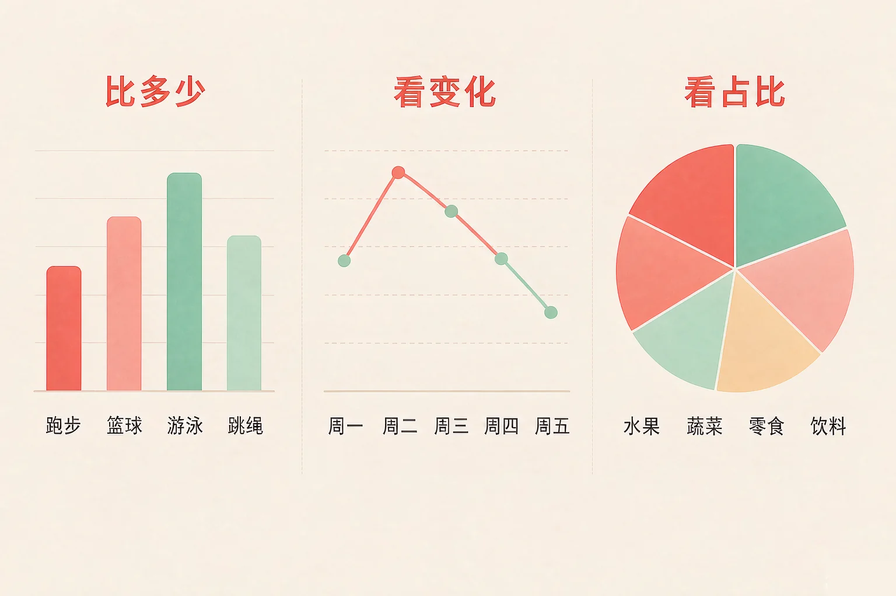
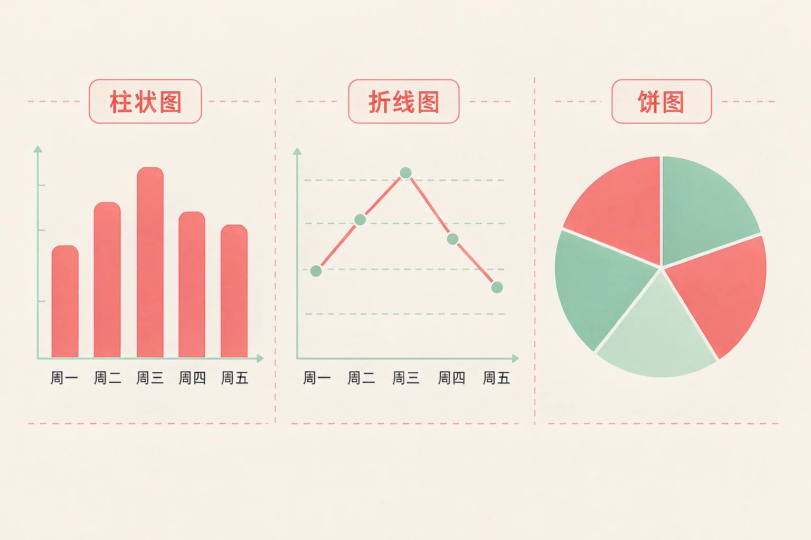

Gallery
v1.0.0 · skill v7.22.0
小学四年级 · 数据与编码
同一份数据，为什么换一张图，别人看到的东西就完全不一样？

选一个你真正好奇的问题，后面的动手活动都会围着它转。
选择或输入后，这节课会围绕你的问题展开。
先凭直觉选一个，选完立刻看到解释——错了也没关系，正好知道要重点听哪里。
1. 想知道「这一周每天的气温是怎么变的」，用哪种图最合适？
有时间先后、想看变化，折线图最合适：线往上就是变高，往下就是变低。错因提醒：常见错误是觉得「有数字就能画饼图」——饼图讲的是占比，看不出「一天天在变热还是变冷」。
2. 班上有四个小组，想说明「第三组的人数最多」，用哪种图最容易一眼看出来？
四个小组是并排的，比的是谁多谁少，柱子一高一低最直接。错因提醒：有同学误认为「只要是几比几就用饼图」——饼图比的是「占整体多少」，要比多少还是柱子清楚。
3. 一张图上有柱子、有数字，却没有写标题和单位。会有什么问题？
标题说明这张图在讲什么，单位说明数字代表什么。少了它们，图就讲不清楚事情。错因提醒：很多同学把力气都花在把图配色画漂亮上，却忘了标题和单位才是别人看懂这张图的前提。
为什么要学这一课？
我们收集数据时，记下来的是一行一行的数字（And）；可数字要一个一个读、一个一个比，看半天也说不清谁多谁少（But）；把数字画成图，高矮长短直接摆在眼前，一眼就能看出来（Therefore）。
把数据画成图，就叫数据可视化。它让「多少」和「变化」变成看得见的高矮、长短和走向。
① 比多少
谁多谁少，柱子的高矮直接告诉你。
② 看变化
一段时间里怎么变的，看线条往上还是往下。
③ 看占比
一部分占整体的多少，看扇形有多大。

🔍 深层理解 换个角度再看一遍这件事，看看能不能说出背后的原理。
看见它：同样是四个数字，写在纸上是一行字，画成图却变成有高有矮的柱子——数字没变，你看到的东西变了。
解释它：为什么图更容易看懂？因为眼睛比大小特别快：两根柱子谁高，你几乎不用想；两个数字谁大，还要读一遍再比。
比较它：数据没变，换成不同的图，你注意到的重点就不一样：柱子让你比高低，折线让你看走向，饼图让你看比例。
先选一份数据，再选一种图，图会立刻重画一遍。多试几组，看看同一份数据换成不同的图，你能看出什么不一样。
三种图没有谁更好，只有谁更合适。看清楚数据长什么样，再决定用哪一种。

把没有先后顺序的数据连成折线。比如把「四种运动的人数」连成线，线往上走并不代表「运动变多了」——它们只是四个并排的类别。反过来，把有时间先后的数据画成饼图，也看不出「在变多还是变少」。
先点一张卡片，再点你认为对的那个筐。每放一次都会立刻告诉你理由。
点一张卡片开始归位。
题目：四（1）班一周的借书量是：周一 12 本、周二 15 本、周三 20 本、周四 16 本、周五 10 本。请选一种合适的图，说明「周三借得最多，以后一天比一天少」。
把这个数据画成饼图。五天的借书量加起来并不是「一整个整体分成的五份」，饼图只能告诉你哪天占得多，却说不出「一天比一天少」。另外，图上不写「单位：本」，别人就不知道柱子的高矮说的是本数还是人数。
先凭直觉选一个，选完立刻看到解释——错了也没关系，正好知道要重点听哪里。
1. 想说明「班上同学最喜欢的运动里，每种各占全班多少」，最合适的图是：
全班人数是一个整体，每种运动是其中一份，看占比用饼图最直接。错因提醒：柱状图也能比出多少，但要说「占了多少」，饼图的扇形大小更好懂。
2. 下面哪一组数据，适合画成折线图？
气温是随时间一个点一个点记录的，有时间先后，能看变化。错因提醒：水果价格和糖果颗数都是并排的类别，没有先后顺序，连成折线毫无意义——这是把折线图用错的最常见情形。
3. 有同学说：「图只要画得漂亮就行，标题和单位写不写没关系。」这句话的问题是：
标题说清这张图在讲什么，单位说明数字是「本」还是「人」。缺了它们，图就讲不清楚事情。错因提醒：很多同学误认为「图好看就够了」——可视化的目的是把事说清楚，不是比谁好看。
数据：一年级 120 本、二年级 150 本、三年级 180 本、四年级 210 本。请挑一种图，让「四年级最多」一眼看得出来；再试试把标题和单位关掉会怎样。
选好以后，把结论写成一句话：
你选的是哪种图？为什么？图上写了标题和单位以后，这句话是不是更容易让别人看懂？
先凭直觉选一个，选完立刻看到解释——错了也没关系，正好知道要重点听哪里。
1. 运动会结束，体育老师想说明「四（2）班在六个项目上的得分，哪个项目最高」。最合适的图是：
六个项目是并列的，比的是谁高谁低，柱子最直接。错因提醒：别一看到「六个数字」就想连成折线——项目之间没有先后顺序，连成线看不出任何趋势。
2. 新闻里想说明「今年上半年每个月的气温是怎么变的」，画成饼图行不行？
饼图讲的是占比，六个月的占比加起来是一整年——你想说的「变化」它讲不出来。错因提醒：以为「饼图能看出哪个月最热」就够了的同学，忘了题目要说明的是「怎么变的」。
3. 小华把「四种运动各自的人数」画成了折线图，还标出了每个点。这张图最大的问题是：
折线只在数据有先后顺序时才有意义；四种运动是并排的类别，用柱状图或饼图才对。错因提醒：「数字标对了」不等于「图选对了」——先想清楚数据长什么样，再决定画什么图。
回到开头那四个数字：篮球十二人、足球九人、跳绳十五人、乒乓球六人。写在纸上是一行数字，画成四根柱子，「喜欢跳绳的人最多」一眼就看出来了——数据没变，看懂它容易多了。
给别人讲一遍：请用「比多少、看变化、看占比」这三个词，说清楚你在什么情况下会选哪种图。
再动一动手：画出来——把你自己统计的一份数据画成图，写上标题和单位，并写一句话说出结论。
三层练习，做完第一、二层就算通关；第三层留给愿意继续探索的同学。
⭐ 基础巩固（必做）
⭐⭐ 能力应用（必做）
⭐⭐⭐ 迁移挑战（选做）
左边是学它之前要先会的，右边是学会之后可以继续探索的，下面是同一领域的伙伴知识。
图谱正在加载：首次进入需下载知识索引（约 1–3 秒），加载完成后本行会自动消失。